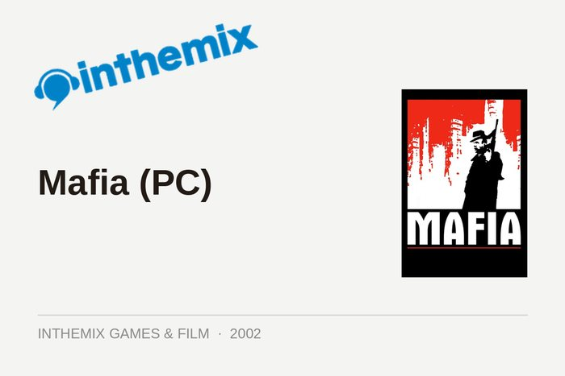
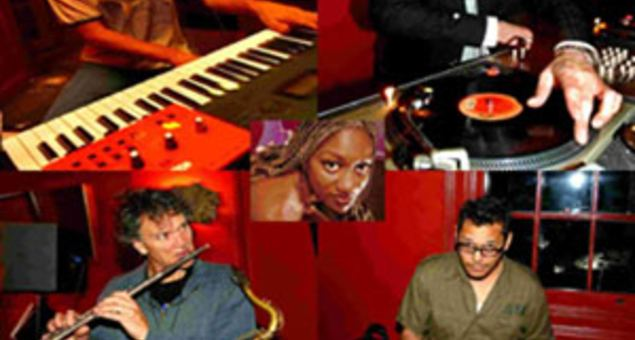

The Deep Archive
1,766 pieces recovered from inthemix, Insomniac, Ibiza Voice, Data Transmission and FasterLouder. Most of this work went offline when the sites that ran it closed or moved. It was rebuilt from copies kept by the Internet Archive’s Wayback Machine.
inthemix Features & Interviews
86 pieces · 2004–2015Interviews and features for inthemix, the Australian dance music website Angus wrote for and edited.
inthemix Audio Interviews
182 pieces · 2007–2010Between 2007 and 2010, many inthemix interviews ran as audio: a written introduction above a Flash player carrying the conversation. The players went when Flash did, and the recordings did not survive. The introductions did, and they are collected here as published.
inthemix Reviews
89 pieces · 2003–2015Album, compilation and live reviews for inthemix.
inthemix Games & Film
16 pieces · 2002–2007Game, film and DVD reviews for the lifestyle section of inthemix, 2002 to 2005, among the earliest writing in this archive.
inthemix News
1,167 pieces · 2006–2014News for inthemix: tours, line-ups, festivals and the business of dance music in Australia.Insomniac
170 pieces · 2016–2019Features and interviews for Insomniac, the US events company, written as a contributing editor.
Ibiza Voice
23 pieces · 2013–2015Interviews, reviews and features for Ibiza Voice.
Data Transmission
27 pieces · 2013–2015Reviews and features for Data Transmission, the UK electronic music website.
FasterLouder
6 pieces · 2007–2010A handful of pieces for FasterLouder, the Australian live music website.